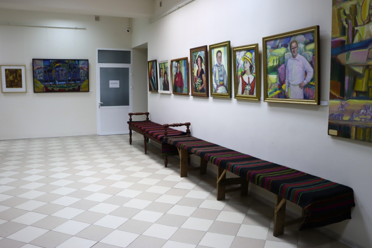
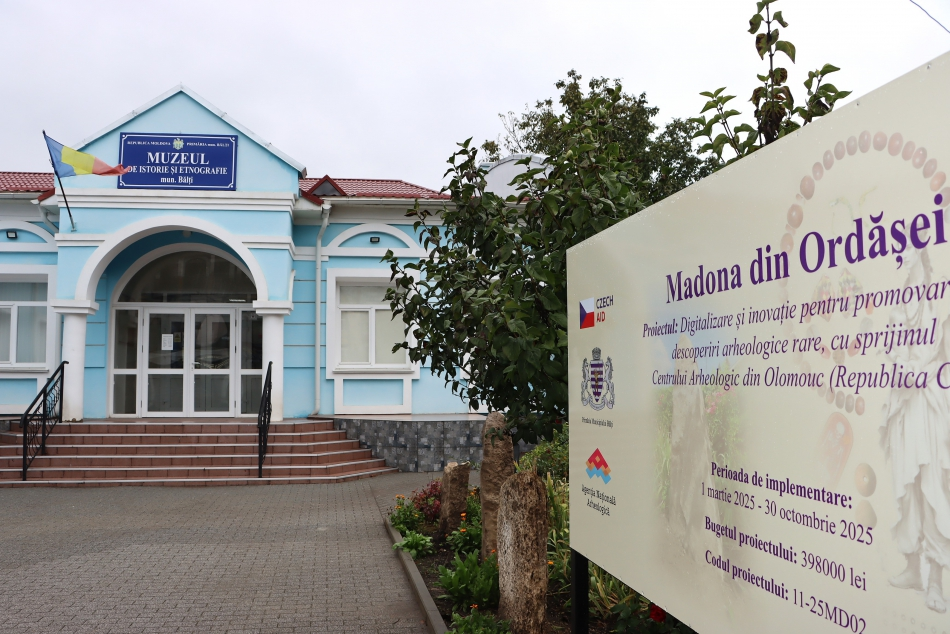
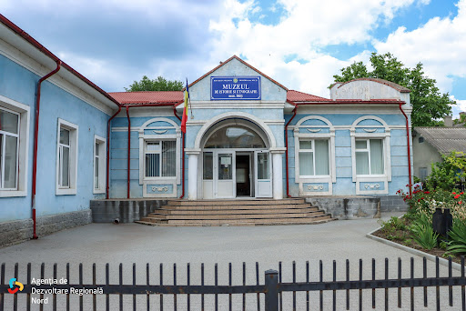

Muzeul de Istorie și Etnografie
Descoperiți povești, artefacte și expoziții interactive care readuc la viață trecutul municipiului Bălți.
Expoziții curente și viitoare
Template minimal pentru a arăta ce pot vedea vizitatorii chiar acum și ce urmează.

Curentă
Istoria urbană a Bălțiului
Documente și artefacte care urmăresc evoluția orașului de-a lungul timpului.
Vezi mai mult
Curentă
Memoria locului
Colecții locale ce reflectă viața comunității și patrimoniul cultural regional.
Vezi mai mult
Viitoare
Tradiții și meșteșuguri
O incursiune în tehnici populare, obiecte etnografice și meșteșuguri autentice.
Vezi mai mult
Viitoare
Patrimoniu în imagini
Galerie vizuală cu fotografii de arhivă, monumente și momente istorice locale.
Vezi mai mult